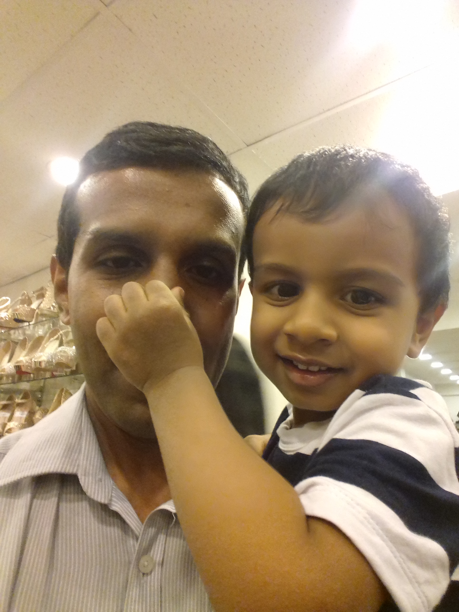

|  | Kasun SenevirathneRegistrar in Community Medicine
|
I'm a public health proffesional in Sri Lanka, curently working in Regional Health Training Centre - Kadugannawa
| Period | Place of Work |
|---|---|
| 2018 – to date | Regional Health Training Centre – Kadugannawa as Medical Officer Training |
| 2016 – 2018 | Postgraduate Trainee (Public Health), Post graduate Institute of Medicine, University of Colombo, Sri Lank Attached to the Epidemiology Unit of the Ministry of Health, Sri Lanka |
| 2014-2016 | Regional Epidemiologist – Nuwaraeliya district (After completing the MSc in Public Health) |
| 2013 -2014 | Postgraduate Trainee [MSc (Public Health)], Post graduate Institute of Medicine, University of Colombo, Sri Lanka |
| 2011-2013 | Medical Officer of Health, Medical Officer of Health Office- Bagawanthalawa |
| 2010-2011 | Internship In Peadiatrics and Gynaecology & Obstetric units in District General Hospital Nawalapitiya |
|
|